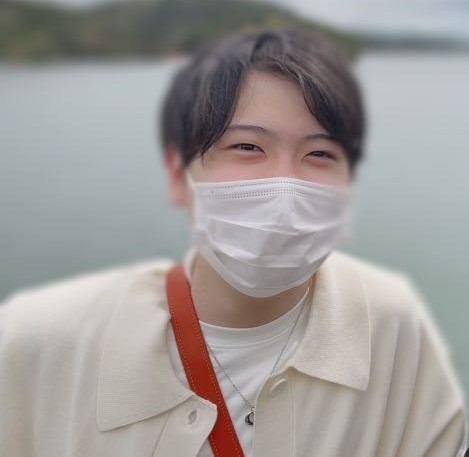

Top

フルスタックエンジニアを目標に、日々学習を続ける新社会人です。
学生時代はプログラミングスクールのメンターや、内定先の営業チームのサポーターとしてのインターンに参加していました。
今後は会社での活動だけでなく、自分で稼ぐ力を身に着けるべく、成長への意識をもって取り組んでいくつもりです。
プロフィール
| 名前 | 久慈和輝(Kuji Kazuaki) |
| 年齢 | 23歳 |
| 出身地 | 岩手県 ※現在は東京に住んでいます |
| 趣味 | 1. プログラミング 休日は専らコード書きまくってます 2. ゲーム スプラトゥーンがメインです。 やり始めると止まらないのでタイムロックコンテナ使って制御してます |
使用言語
実務経験有
プロダクト制作経験有
趣味レベル
好きな言葉
↓↓↓↓↓↓ 発掘した好きな言葉リスト：
0
個（全部で2個） ↓↓↓↓↓↓